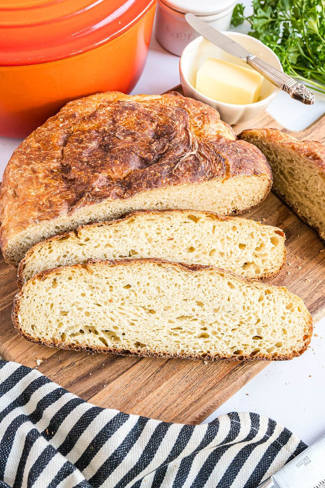
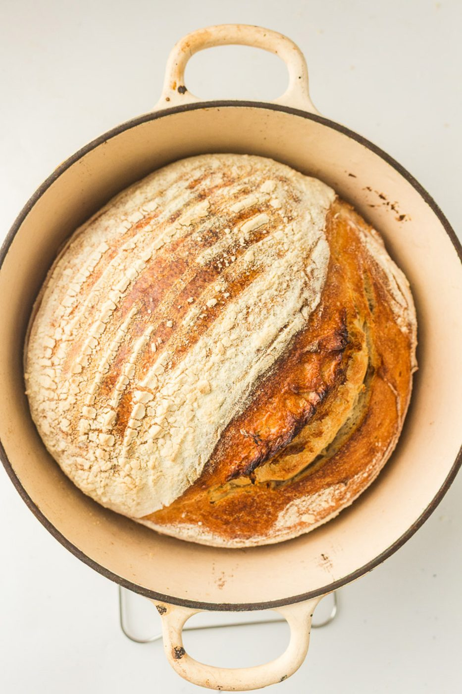
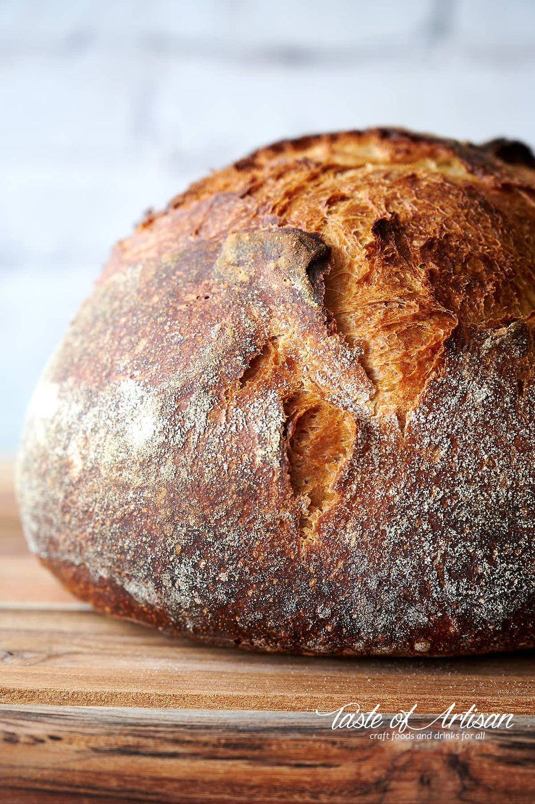
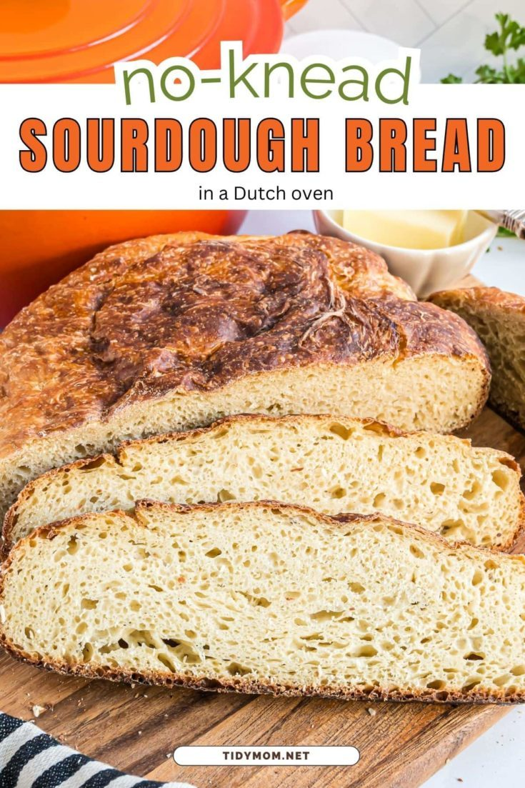
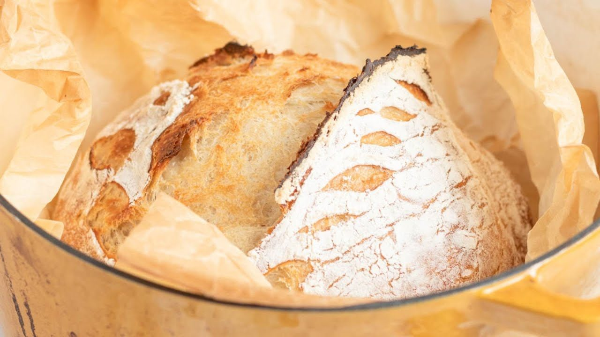
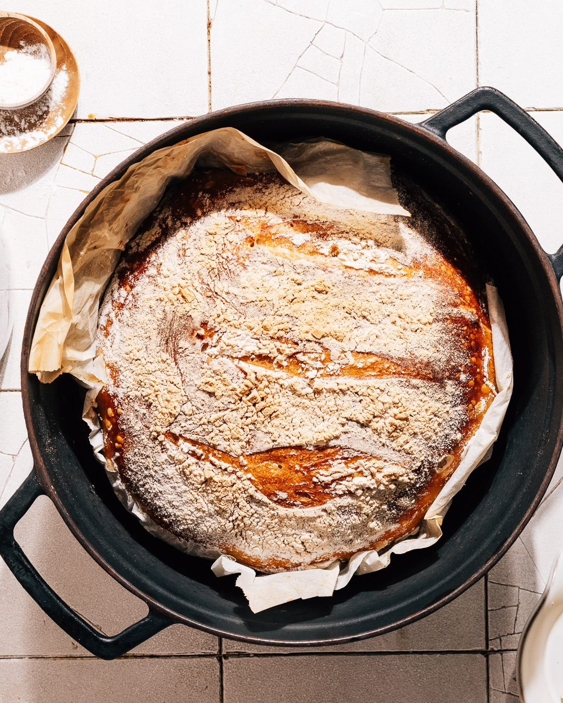
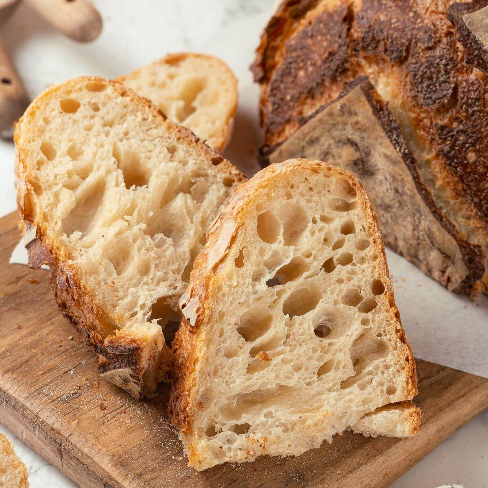

← Sweet & Baked
No-Knead Sourdough
Flour, water, salt, time. The easiest genuinely great bread in the world takes zero kneading and one night of patience.
Flour, water, salt, time. The easiest genuinely great bread in the world takes zero kneading and one night of patience.
Jim Lahey of Sullivan Street Bakery published this method in 2006 and rewired home baking overnight: an extremely wet dough, a tiny amount of yeast, a long slow fermentation — and instead of kneading, you just wait. The gluten develops itself while the dough sits. Then a screaming-hot Dutch oven traps steam and gives the crackly, blistered, professional-grade crust that home ovens could never manage before.
The method is forgiving to a fault — the dough rises while you sleep, and the schedule bends around your day. Use a true sourdough starter version for deeper flavor, or instant yeast for reliability; both make bread that makes people ask where you bought it. The answer, always, is: nowhere. You made it. With waiting.
serves 1 large loaf — tick items off as you shop; it saves as you go
Every tool this recipe leans on — click any tool for its full story. The whole catalog lives on the Tool Wall.
baker's percentages - flour is math
one bowl, one day
folds and shaping without sticking
dough at 24 C is the target; the kitchen is your incubator
the bread oven inside your oven
score the loaf - confident, one centimeter deep
Stir flours, yeast, salt; add water; mix with a spoon or your hand for 30 seconds until no dry bits remain. It will look like a shaggy, sticky disaster. Cover the bowl. This is the entire 'kneading'.
Rest 12-18 hours at room temperature (18-22°C). It should triple and the surface should be dotted with bubbles. Longer is fine — overnight plus a lazy morning is the intended lifestyle.
Scrape the wet dough onto a floured surface, fold it over itself 3-4 times (a letter fold), rest 15 minutes, then shape into a tight ball by folding edges to the center. The dough is sticky — wet hands, confidence, no panic.
Dust a tea towel heavily with rice flour, place the ball seam-up, dust the top, cover loosely. Rise 1-2 hours until puffy and slow to spring back when poked.
Put your Dutch oven (lid and all) in the oven at 250°C / 475°F for a full 45 minutes before baking. Empty, blazing hot. This is the crust machine.
Flip the dough into the scorching pot seam-down, slash the top once with a razor, lid on, 30 minutes. Lid off, 12-18 more minutes until the crust is deep mahogany and the internal temp is 96°C / 205°F. Cool on a rack for a full hour — cutting early releases steam and ruins the crumb. Wait. You have come this far.







Images are web-sourced via image search and self-hosted. Original sources:
https://z-cdn.chatglm.cn/image-search-mcp/images-ppt/2604c08e48ca.jpghttps://z-cdn.chatglm.cn/image-search-mcp/images-ppt/4d1e232816de.jpghttps://z-cdn.chatglm.cn/image-search-mcp/images-ppt/7251a4e47ebd.jpghttps://z-cdn.chatglm.cn/image-search-mcp/images-ppt/86969dfd4375.jpghttps://z-cdn.chatglm.cn/image-search-mcp/images-ppt/881e16ac7a76.jpghttps://z-cdn.chatglm.cn/image-search-mcp/images-ppt/8d865c4bf3ac.jpghttps://z-cdn.chatglm.cn/image-search-mcp/images-ppt/f653ba706d3b.jpgVerified working videos — click a card to load the embed.


The dish at a glance — twelve field notes for the collectors.
Powered by GitHub Issues — the backup kitchen. One issue per recipe; your comment lands in the repo.
Other dishes in this kitchen that lean on this recipe.

thick slices under the gruyère — the soup's crouton, engineered

the official dunker — technically a side, spiritually required
If this one works for you, the neighbors probably will too.
dough confidence: flour, patience, and a hot oven

the fermentation culture club